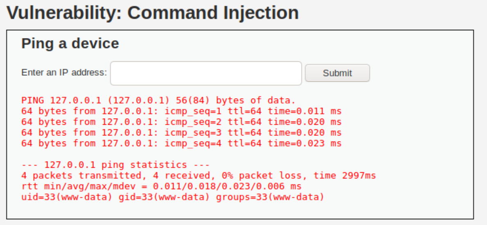

OWASP Top 10 OS Command Injection
OWASP Top 10: 1. Injection (OS Command Injection)
I have decided to dig a little deeper into the OWASP top 10. I find web security such a vast subject (with new issues being found daily) that instead of chasing around every new issue I come across my time would be better spent getting a better understanding of the Top 10 first. I, like most people interested in information security, have been aware of the top 10 for a while and even had chance to set up labs or practice them on hack the box but this will be the first time I consolidate my knowledge in a blog for future reference. I believe this understanding will help me when I explore more niche vulnerabilities in the future. For those new to the subject and not aware of these 10, I list them below. Further details can also be found here.
- Injection
- Broken Authentication
- Sensitive Data Exposure
- XXE
- Broken Access Control
- Security Misconfiguration
- XSS
- Insecure Deserialisation
- Using Components With Known Vulnerabilities
- Insufficient Logging and Monitoring
So starting off with this article I shall cover part of the first item on the list. Injection is an umbrella term and covers quite a few web vulnerabilities. For example OS, SQL and LDAP injection. This article will focus on OS command injection.
Command Injection
Impact: Critical Risk: High Difficulty: Medium to High
So what is OS Command Injection?
Simply put OS Command Injection is the ability to remotely execute OS commands on a target system. The reason this vulnerability exists is that the web page executes a shell command as part of its functionality and the command injection piggy backs off this to execute commands for the attacker. The classic example of this is a page that lets you ping another IP address. By simply adding a ;ls to the ip the shell that executes the ping sees this as a new command and executes it as well. This is of course an over simplified example and this particular vulnerability is usually far more complicated to pull off. If you do manage to get it however you are a good way to compromising the system, depending on which user you are executing commands as.
How do I find OS Command Injection?
The first thing to establish is what kind of OS the system is running. This is important as it will let you know what type of commands you can execute. No point trying to execute ls if you are on a Windows system.
The following areas should be tested for injection possibilities:
- POST request: Body data parameters
- GET request: Parameters submitted in URL
- Headers including: Cookies, Referer, X-Forward-For, User Agent, Any custom headers
To test these parameters a good place to start is with the ping command. This allows an attacker to specify the amount of packets sent and thus the delay in the loading of the web page.
With the options -c in Linux or the -n in Windows will tell ping exactly how many requests we want it to send and these equate to roughly one a second. So if a page loads normally in less than 2 seconds and then we feed it ; ping -c 10 8.8.8.8 if the page takes around 10 seconds instead of two its likely it is vulnerable to command injection. Best to check this kind of thing a few times as speeds can obviously vary. The following command suggested by Portswigger will cause a 10 second delay in Windows and Linux based systems if they are vulnerable and unfiltered:
|| ping -c 10 127.0.0.1 ; x || ping -n 10 127.0.0.1 &
The main way to test command injection is to append a command to a bit of user submitted data that is used as an argument for an executed command on the system. To do this several symbols can be tested to enable an attacker to append the malicious command to the normal one. Below is a list of symbols that should be tried when trying to execute commands:
- ;
- |
- ||
- &
- &&
- \n
- ()
- {}
- {{}}
On linux you can also try adding `` or $ to execute inline commands. It is also worth noting that it may be needed to break out of ‘ or “ to be able to execute commands. These symbols can also be tested at the end of a line as well as the beginning to see if the results differ. Additionally, as well as appending commands on to expected input it should also be tested by completely replacing the expected command with the malicious one. URL encoding is likely required when submitting and spaces can be filled with either %20 and +.
If when using the commands and symbols above the page takes the expected time to load (based on the number of ping packets) the next step is to find a way to read the results. One of two things will occur. Either the results of the ping requests will be printed to the page (see Fig 1) or they won’t. If it looks like the ping request worked but nothing prints out then see the What if nothing prints to the screen? section below.

Fig 1. Example of the command 127.0.0.1 ; id being printed to screen from DVWA
If the results do print to screen then the echo command is your friend when it comes to testing for command injection. By using echo you can quickly establish whether it is possible to print the output of commands to the page. The command injection can be confirmed with a simple echo random string and see if the random string appears on the screen. It is important to check as there is a possibility of false positives with time delays as it could just be that the page took a bit longer to load due to a networking issue. This is a problem that can occur with some web scanners so confirmation is important. From here, commands such as ls and cat can be used on linux servers to read directories and files and then control of the system is pretty much yours.
An important step to discovering just how much damage you can do with your command injection is to establish which user you are. On linux this is likely to be www-data and so your abilities will be limited compared to a normal user or even root. But from there it moves on to privilege escalation (if it is in scope). So to establish which user your commands are executed as you can inject the command ‘whoami’ which should provide detail about exactly who you are. The other great thing about this command is that it works for both Linux and Windows servers.
What if nothing prints to the screen?
In an ideal world (for attackers at least) any command that is executed will immediately print its output to the web page signalling loud and clear that it is indeed vulnerable. This would be achieved with the echo command mentioned earlier. However, this is not always the case and sometimes you won’t see anything but the command will still be executed. This is known as a blind vulnerability. So how can you know if the commands were successful? There are a couple of ways.
Depending on the situation of course you can use something like Wireshark to confirm the injection. For situations like Hack the Box where you are on the same network by simply starting up Wireshark and executing the ping it will soon show any ICMP packets that have been sent from the target system. This of course means your IP is in all their logs so like I said it depends on the situation. It is also possible to do this over different networks as well using things like ngrok or by setting up a cloud service but these would still fill logs with your IP address which isn’t ideal in most situations but perhaps useful for things like bug bounties. From here a reverse shell can be attempted to gain access to the system (see below).
A similar but alternative method is to invoke a DNS request using nslookup to a server you control. The site Canary tokens is ideal for this kind of request as they will notify you if a connection is made.
A (slightly) more subtle way of determining if a site is vulnerable to blind command injection is to redirect the output. If you have access via a web app then you are likely in a folder such as /var/www/html/ so by outputting the commands you wish to execute to a folder saved in this directory you should be able to view them on the server. If you were to inject ;ls > ls.txt and then visit target.site/ls.txt, if it were vulnerable it would bring up the file which would list file names of all the pages in that directory giving you a slightly slower but still fully functional command injection. Just make sure you delete it after if you are trying to cover your tracks.
Escalation of OS Command Injection
As we have control of the system via command injection initial escalation is more for convenience over capability. Using the command injection to add a user, execute a reverse shell or bind a shell to a port is a more convenient way than submitting a new request each time. Especially if it is a blind injection. A list of useful reverse shell commands can be found on Pentest Monkey. This will depend on the user you have control of and what they have the rights to do. In some cases www-data will be unable to execute these types of commands and in this case using wget or curl to download a web shell on to the system is a good alternative. There are plenty of php based pages that can be added to the html folder and then accessed allowing a more convenient way to execute commands on the system.
I have started a document on my GitHub that lists reverse shell one liners that can be used for a quick brute force against with a command injection to see if any of them result in a shell. the list has {IP} instead of an IP and {PORT} instead of a port. These can be replaced with your own with the sed command. syntax below for those who don’t know it.
sed -i ‘s/{IP}/192.168.1.1/g’ RevOneLiners.txt
If it won’t allow any of these in this method then if you save one to a file with the correct IP and Port filled then request it with curl and pipe it to bash to execute it.
Bypassing Filters
Things are never easy and as such filters are often put in place to blacklist or whitelist certain types of inputs. There are of course ways around these types of things. A good list of bypasses and tricks can be found on payloads all the things.
I have created my own master list of command injection payloads with various filter bypasses and injection techniques. These can be found on my GitHub. I also have the linked page that lists alternatives to the space for when it won’t process them. All the GitHub links are a work in progress and will be updated over time.
Examples in Hack The Box
For those wishing to practice command injection there are example on DVWA and Juice Shop as well as the below retired Hack the Box machines:
- Chainsaw
- Fortune
- Holiday
- Remediation
The most obvious way to try to avoid command injection on your site is to not call any system commands from it, especially using user supplied input. If this is unavoidable then enforcing a white list of inputs and validating certain characters is a must.
Disclaimer
As with all of these types of techniques these methods should only be used against systems you own or those you have express and written permission of the owner to test. It is illegal to use these techniques on systems in other cases.
Conclusion
I hope this helps some people understand command injection a bit more. Any feedback or questions are welcome on my twitter below. I will be adding other OWASP top 10 vulnerability write ups in the future.

Subscribe to 0x221B
Get the latest posts delivered right to your inbox